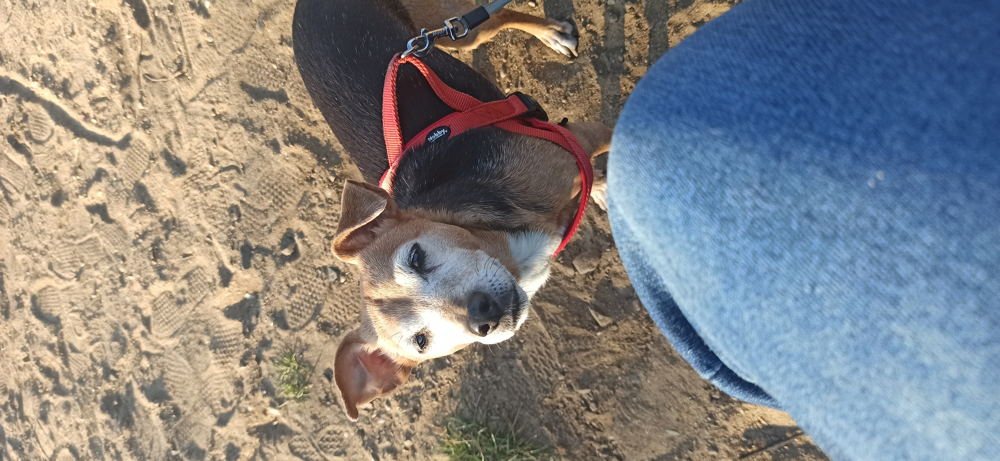

Zwierzaki Antoniego
Nuka - Nuka to lojalna psinka, z której z aktywnego psa zrobiliśmy kanapowca.
Dni lubi spędzać w domu, okazjonalnie wychodząc na ogród lub na spacer.
Uwielbia wygrzewać się na słońcu, oraz jeść wszystko poza karmą.
Urodzona w Październiku 2015 roku.


Powrót